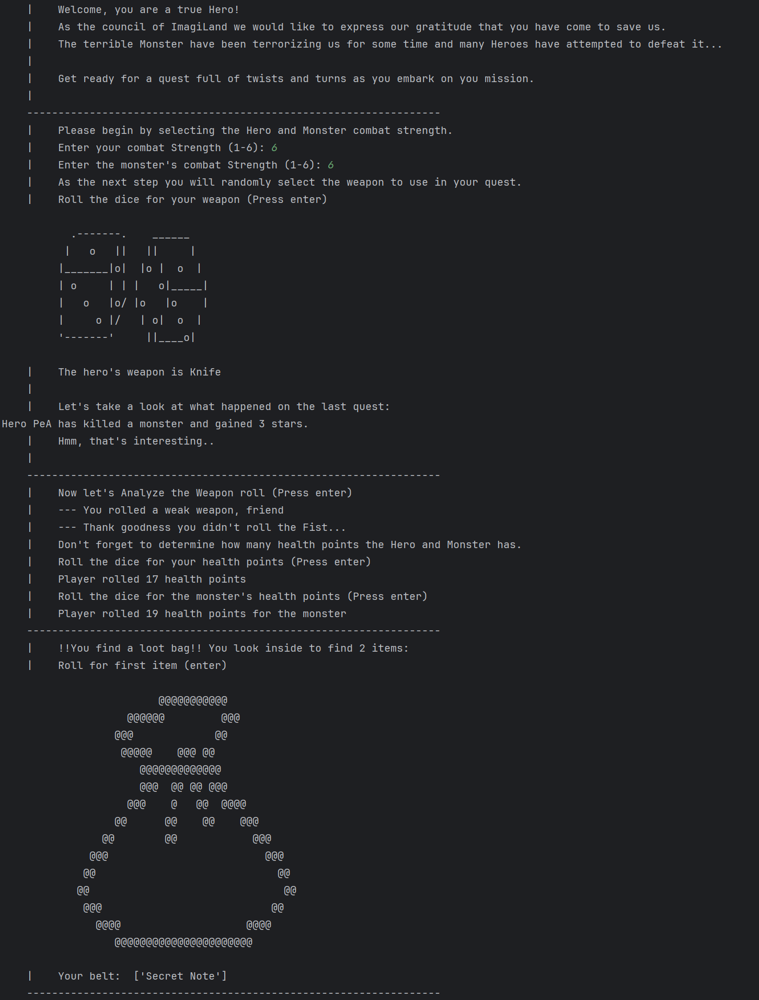
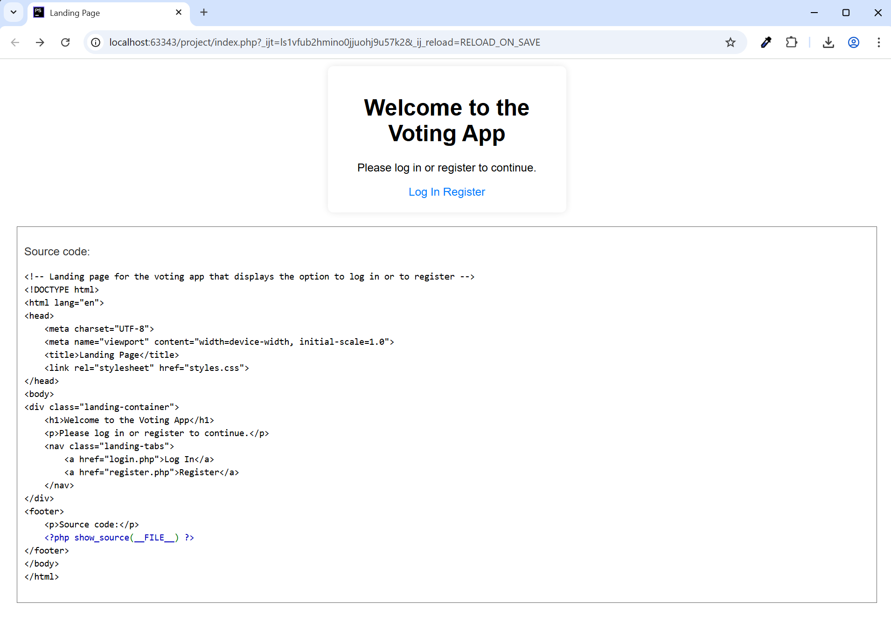
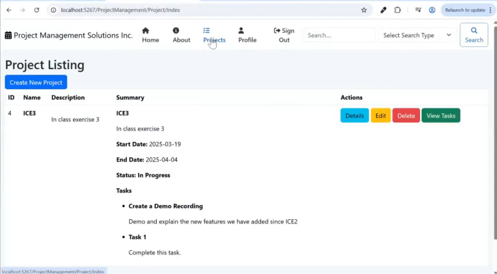

Penny Ahlstrom
I am currently a Computer Programming and Analysis student at George Brown College. I'm passionate about building functional applications and continuously expanding my skills in various coding languages and technologies. I excel in translating complex concepts into clear, actionable solutions and thrive in collaborative, team-oriented environments. I'm eager to apply my skills and contribute to the success of real-world projects.
Below are some examples of the projects I've worked on that demonstrate a highlight of the skills I have developed.
COMP2152 - Python Console Game
In our Open-Source course we learned to work with git using GitHub, and we learned to code in python. This course was aimed at getting us comfortable collaborating in development teams to add features to already existing code bases, being comfortable cloning, pulling, merging and pushing our code. This honed our collaboration and team work skills as well as out coding abilities.
COMP1230 - PHP Voting App
In our Advanced Web Programming course, we focused on server-side development using PHP and MySQL. As part of the course, we developed a Voting app for registered, logged-in users. The app allowed users to securely vote on various topics, with data stored and retrieved from a MySQL database. We followed best practices for writing clean, maintainable code and ensured proper user authentication for data security. Additionally, we had unit tests that needed to pass, helping us validate the functionality of key components and ensuring the app worked as expected. This process helped us identify and address any issues, resulting in a stable and reliable application.
COMP2139 - .NET Project Management App
In our Web Application course we took a deep-dive into MVC architecture, creating a project management app in .NET using C#. This was a group project were we collaborated by working on different aspects of the project, leveraging git and GitHub as a collaboration tool.